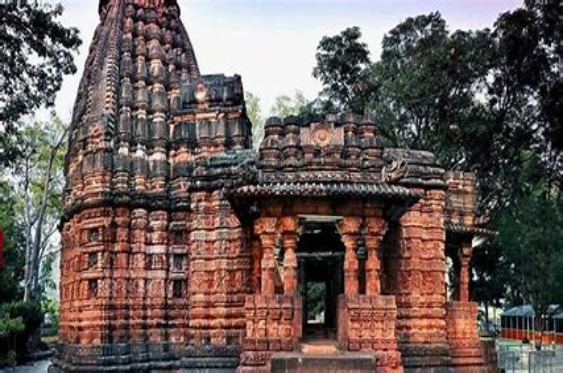

Kanger Valley
Kanger Valley National Park is renowned for its rich biodiversity, encompassing a variety of flora and fauna. The park is home to diverse ecosystems, including dense forests, grasslands, and rivers, which support a wide range of plant and animal species. The park is adorned with lush greenery, with dense forests of sal, teak, bamboo, and other tropical trees dominating the landscape. It is also home to various species of medicinal plants, shrubs, and herbs, contributing to the park's ecological significance.
Bhoramdev Temple

Bhoramdeo Temple, also known as Bhoramdeo Mandir, is a complex of Hindu temples dedicated to Lord Shiva. The main temple is constructed in the Nagara style of temple architecture, with intricately carved walls depicting mythological scenes, celestial beings, and various deities.t is dedicated to Lord Shiva and is an important pilgrimage site and architectural marvel.he temple's architecture bears resemblance to the famous Khajuraho temples of Madhya Pradesh, characterized by erotic sculptures and exquisite craftsmanship
sirpur
Sirpur is an ancient archaeological site located in the Mahasamund district of Chhattisgarh. It was once a prominent center of Buddhism and Hinduism, with numerous temples, monasteries, and other structures dating back to the 6th century AD. Sirpur's cultural heritage is reflected in its architectural styles, sculptures, and inscriptions, showcasing the influence of Buddhism, Shaivism, and Vaishnavism.